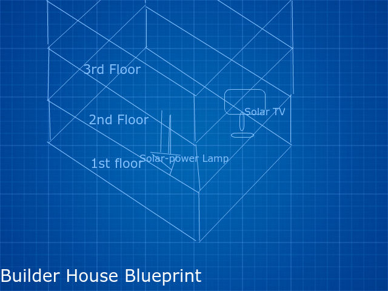
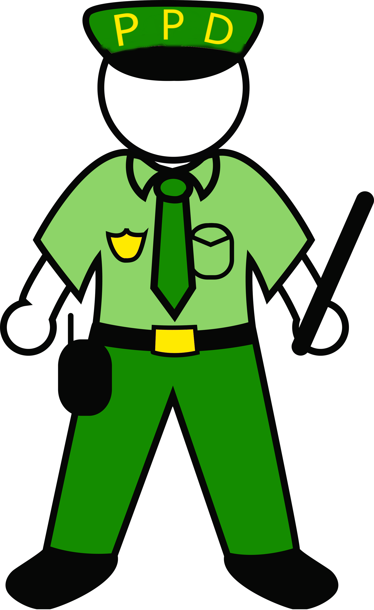
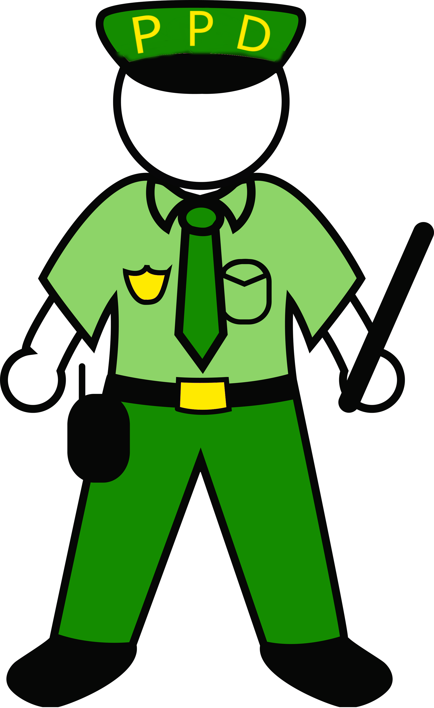

Jobs
To help and sustain the community and make sure citizens get pay, there are many jobs and roles from which citizens may choose. The citizens must receive the required education for these professions and receive a physical fitness course for jobs that require it, but other than that they can be whatever they want. Uniforms aren't usually required for a job, so unless otherwise stated you can dress however you want. These jobs include:
- Builders, who build and design houses. Builder course on laptops and physical fitness required. There is no uniform, but all Builders must wear a hard-hat to protect the head and clothes that they're ready to get dirty.
- Doctors, who diagnose, test, and treat injured or sick citizens. Medical course on laptops required. There is no uniform, but Doctors must wear gloves and keep clean between patients.
- Police, who capture people whom break the law. Police and law course on laptops and physical fitness required. Uniform is olive green and includes a "PPD" hat.
- Programmers, who handle things like the laptop education interface, software for other professions, and video game recreation. Programming and devoloping course required. There is no uniform because Programmers mostly work on computers.
- Bankers, who give financial advice and keep track of people's money. Economy and business courses required. There is no uniform.

 
